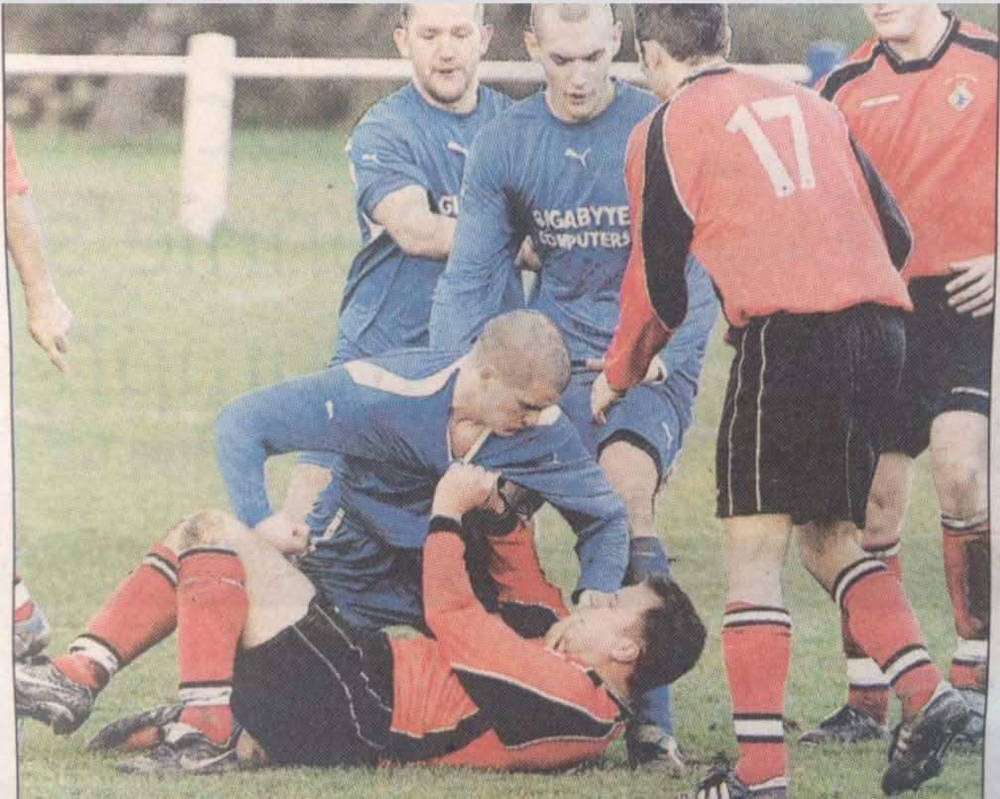
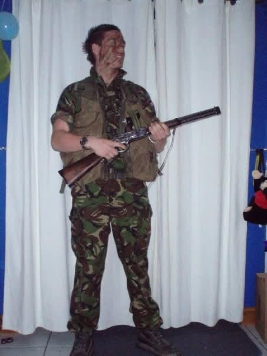

Your anonymous input can help us identify trends, protect people, and make change happen. If you’ve witnessed anything relevant in your area, even something small — please report it here.

Dartmouth, Gotham
Royal Navy Deploys to Gotham Amid Rising Chaos: A Mission of Peace in the Shadow of War
By our embedded correspondent in Dartmouth
DARTMOUTH, GOTHAM — Once a quiet estuarine capital perched at the mouth of the Dart, Dartmouth now stirs to the low hum of Merlin helicopters and the stately presence of RFA Mounts Bay. The Ensign flutters above the grey hulls of Royal Navy warships as Operation Final Endeavour unfolds—a mission born of necessity, forged in diplomacy, and anchored in Britain's long-standing maritime ethos: to protect the innocent, uphold peace, and respond when democracy falters.
Gotham, a peninsular republic long caught between its past ties to the Metropolis Union and its tentative future as a sovereign democracy, has again descended into unrest. What began as a hopeful turn—an overwhelming electoral mandate for the pro-democracy Independent Party in 2024—was soon drowned in the echoes of sabotage, corruption leaks, and escalating violence.
Black RIB flying the MUG flag on the River Dart
At the heart of the disruption: the Metropolis Union Group (MUG), a pro-Metropolis insurgency whose rhetoric is steeped in grievance and whose methods are unmistakably brutal. Their agenda? Nothing short of dismantling Gotham’s fragile democracy.
An attack in March—using a vehicle-borne improvised explosive device against a military installation—shattered any illusion that MUG remained a collection of fringe protesters. Intelligence now confirms the group’s access to chemical weapon precursors, likely remnants from Gotham’s bloody civil war. The threat of chemical warfare looms darkly, confirming fears that the MUG, emboldened by foreign support and internal discontent, is willing to push Gotham back into the abyss.
Wanted suspect 1, please report any sightings or known details
In the face of this rising menace, Gotham’s legitimate government issued an urgent appeal to the international community. Britain responded.
The Royal Navy's Littoral Strike Group, under the command of COMLSG, has been deployed to restore stability. Its presence is no imperial gesture but a direct response to a democratic government's call for help. RFA Mounts Bay, the operation’s flagship, is anchored just south of Gotham, providing a launchpad for humanitarian efforts and security operations. Royal Marines of 42 Commando, Special Forces operatives from UK SBS, and Mine Countermeasure vessels operate with precision in the littoral zones.
Their mission: protect key infrastructure, reassure civilians, and ensure the streets of Dartmouth are no longer the battleground of extremist ambition.
Wanted suspect 2, please report any sightings or known details
The MUG’s narrative—branding foreign presence as colonial intrusion—wilfully ignores their own reliance on foreign backers in Metropolis and their penchant for mafia-style coercion. In truth, the Navy is not here to occupy but to heal. As one senior officer put it, “We’re not here to take sides—we’re here to prevent collapse.”
Gotham’s civilian infrastructure, already compromised by years of neglect and corruption, is under siege. Hospitals lack supplies. Power stations flicker under sabotage. The Gotham Armed Forces, though loyal to the state, are poorly equipped and ill-prepared. Government services are infiltrated by criminal elements — from the Gotham Mafia to radical environmentalist hackers. In such a febrile environment, stability is not a luxury—it is a moral imperative.
Still, the Navy remains cautious. Rules of engagement are tight. Civilian safety is paramount. Cadets and officers alike move with discipline, eyes watchful, rifles slung but never raised without cause. Riverine patrols secure key access points, while engineers assist in rebuilding shattered utilities. Humanitarian aid, funded by £2.5 million in UK foreign aid, is already being distributed.
The Royal Navy’s presence here is not a mere projection of force. It is the quiet assertion of values: that sovereignty must not be surrendered to fear, that democracy is worth defending, and that Britain, despite the complexities of this conflict, has chosen to stand on the side of peace.
What Gotham faces is not just political turmoil. It is a contest between democracy and anarchy, between a fledgling republic and a shadowy insurgency set on dragging it backward. In such moments, the Royal Navy becomes more than a military arm—it becomes a moral compass.
And in the windswept streets of Dartmouth, that compass now points resolutely toward hope.
Your information could be crucial. If you’ve observed anything unusual or noteworthy related to the current situation in Gotham — we encourage you to report it anonymously using the form below.
If you recognise them or have any intel, please submit an anonymous report via the form below.
Individual A
Individual B